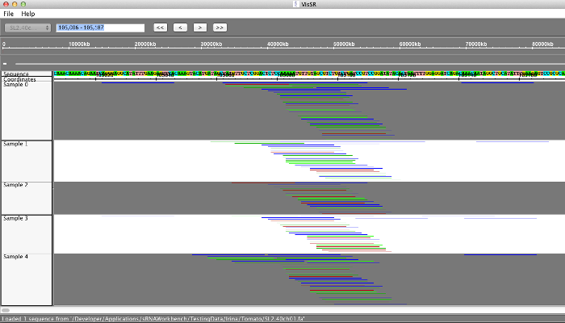
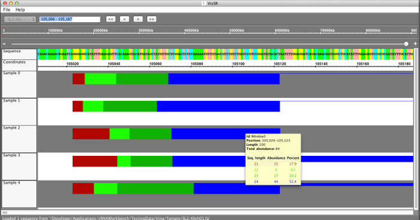

View results
Users have two options when viewing loci predicted in CoLIde or SiLoCo. The standard arrow view as shown below:

Or the aggregated view as shown below (same data and location)

The aggregated view groups all small RNAs in the locus into windows of 100nt and generates a histogram on the abundance of all small RNAs within that window